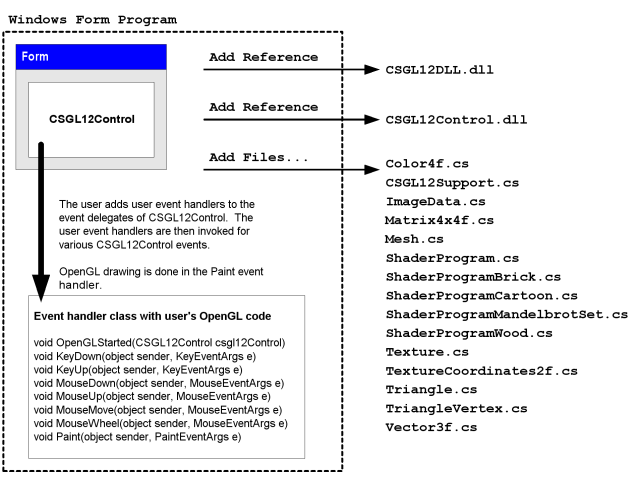

C# OpenGL-Schnittstelle
für die Windows Betriebssystem
Colin Fahey

CSGL12Control auf einem Form, die eine „fraktale“ Pixel-Shader-Programm und GDI+ Zeichnung kopiert, um eine Textur

Zwei CSGL12Control auf einem Form, die Pixel-Shader-Programme und Texturen

Ein 3D-Avatar herum, dass der Desktop und kann mit dem Cursor
1. Software
Diese Version dieses Dokuments sollten nur dann mit dem „CSGL12“ Software. Wenn Sie die Software nicht finden, dann gehen Sie bitte auf der folgenden Web-Site zum Download der Software:
http://colinfahey.com.
2. Alle der C# Computer-Code in der C# OpenGL-Schnittstelle (CSGL12) ist im „öffentlichen Bereich“
Ich habe all die C# Computer-Code innerhalb der C# OpenGL-Schnittstelle (CSGL12).
Ich erkläre, alle von der C# Computer-Code innerhalb der C# OpenGL-Schnittstelle (CSGL12), die für die „Öffentlichkeit zugänglich.“
Daher ist die Computer-Code kann verwendet werden, für jeden Zweck (kommerziell oder privat), ohne Bezahlung, ohne Beschränkungen, ohne Verpflichtungen, ohne die Anerkennung und den ursprünglichen Autor.
Der Code kann geändert werden, oder Teile wiederverwendet werden, ohne Einschränkungen und ohne Verpflichtungen, ohne die Anerkennung und den ursprünglichen Autor.
Das Beispiel-Programme enthalten eine kleine Menge von Computer-Code (speziell, „shader Computer-Code) geschrieben von anderen Menschen.“ Ein solcher Code ist nicht in der Schnittstelle selbst und kann einfach entfernt werden. Diese Code wird nur zu zeigen, die Einfachheit der Nutzung der Schnittstelle zu erstellen und verwenden „shader“ Programme.
3. Einleitung
„CSGL12“ ist eine Sammlung von C# Computer-Code-Dateien, die eine Schnittstelle implementiert, um die OpenGL Grafik-Bibliothek (einschließlich aller Erweiterungen der OpenGL bis zum Jahr 2007) für die Windows Betriebssystem.
Die C# Computer-Code-Dateien in die Sammlung „CSGL12“ machen es einfach, um OpenGL Zeichnung zu C# / .NET Software mit einem „Form“ (ein fall von „System.Windows.Forms.Form“).
Die „CSGL12“ Sammlung von Code-Dateien enthält eine Datei namens „CSGL12Control.cs“, in dem eine Klasse namens „CSGL12Control“, die aus „System.Windows.Forms.Control“. Jede Instanz der „CSGL12Control“ ist eine unabhängige OpenGL Zeichenfläche. Es ist sehr einfach, um mehrere Instanzen von CSGL12Control zu einem Form (ein fall von System.Windows.Forms.Form).
4. Merkmale und Anforderungen der „CSGL12“
Der Code ist nur für die Betriebssysteme Windows, dass die Unterstützung der .NET 2.0 Framework (Windows 2000, Windows XP, Windows Vista, Windows 7)
Der Code kann unter Verwendung „Microsoft Visual C# 2008 Express Edition“ (ein freier Compiler), oder ähnliche C# Compiler.
Der Code verlangt wird, die mit der Option „[X] Allow unsafe code“ bauen, so dass optimierte Bilddaten Funktionen Kopieren verwendet werden kann. Wenn Sie ein Experte C# Programmierer können Sie auf einfache Weise die Teile der C#-Code, die die „unsafe“ Option, und deaktivieren Sie sie, falls gewünscht oder erforderlich. Bild-Daten kopieren ist 10-mal schneller mit „unsafe“ Code als die Alternative, und das ist der Grund, warum diese Codes verwendet wird. Wenn Sie eine DLL, die alle der „unsafe“ Code, dann ein Projekt, das, dass DLL ist es nicht erforderlich, gebaut mit der Option „unsafe“, und so kann man daraus schließen, dass die Abwesenheit des „unsafe“ Möglichkeit in einem Projekt bedeutet nicht, eine zusätzliche Sicherheit (weil DLL zahlreiche Dateien, die benutzt werden, die implizit oder explizit von der Programm-Code „nicht“ enthalten).
Der Code kompiliert werden kann, und wird von einer der folgenden Eigenschaften:
Microsoft Visual C# 2008 Express Edition
Microsoft Visual Studio 2008
Microsoft .NET 3.5 SDK
SharpDevelop
Mono Project
Der Code bietet die meisten OpenGL Erweiterungen (durch das Jahr 2007), einschließlich „vertex shaders“ und „pixel shaders“.
Der Code sieht 1570 Aufgaben im Zusammenhang mit OpenGL:
336 GL functions
51 GLU functions
19 WGL functions
1164 extensions
Der Code bietet einige alternative Varianten der 1570 Funktionen mit verschiedenen Parameter-Typen, für die Bequemlichkeit.
Der Code legt fest, mehr als 3244 Konstanten für OpenGL.
Der Code macht es möglich, mehrere OpenGL Zeichnung Kontexten, alle animieren unabhängig ist, auf jeder „Form“.
Klicken Sie auf ein „CSGL12Control“ gibt es „Eingabefokus,“ so dass nachfolgende Tastatur-und Maus-Rad-Eingang. Cursor-Bewegungen und Klicks werden, wenn der Cursor in die rechteckige Fläche einer Instanz von „CSGL12Control“.
Der Kodex bezieht, gehören Funktionen zu zeigen, wie man einige gemeinsame Aufgaben OpenGL in C# und .NET.
Der Code enthält alle OpenGL Konstanten und Funktionen in alphabetischer Reihenfolge, in „class GL“ in „GL.cs“, so dass es leicht zu bestimmen, wenn eine Konstante oder eine Funktion fehlt (was unwahrscheinlich ist, es sei denn, für Erweiterungen nach dem Jahr 2007).
Das Beispiel zeigt, wie Programme zu tun GDI+ Zeichnung zu einem Bitmap, und dann, wie zu kopieren, dass Bitmap zu einem OpenGL Textur.
Dies ermöglicht Text und andere GDI+ zeichnenden Fähigkeiten, einen Beitrag zu einer OpenGL Szene.
Die GDI+ Bitmap aktualisiert werden können und zur Verfügung gestellt, um ein OpenGL Textur so oft wie einmal pro OpenGL Rahmen.
Die Beispiel-Programme zeigen, wie die Wahl zwischen verschiedenen „pixel shader programs“, während das Programm läuft.
Das Beispiel zeigt, wie Programme zu schreiben OpenGL Puffer, um Bild-Dateien (JPG, BMP, GIF, PNG).
Presse Shift + 0 (Shift-Null) zu schreiben, die OpenGL Puffer zu Bild-Dateien.
Die Beispiel-Code zeigt, wie die Zusammenstellung „GL.cs“ in einem DLL-Datei, und dann fügte hinzu, dass DLL Datei auf einem anderen Projekt, können verhindern, dass die Microsoft-Code-Editoren (z. B. Microsoft Visual C# 2008 Express Edition, etc.) mit „IntelliSense“ (kontext-sensitive Code Completion) aus zu häufig und anhaltend reagiert nicht mehr (immer wieder Pausen für viele Sekunden, so dass der Editor völlig unbrauchbar). Nachdem die Datei „GL.cs“ direkt in jedes Projekt wird bearbeitet von einem Microsoft-Code-Editor ist nicht praktisch, es sei denn, eine Person zu ertragen bereit ist, die Langsamkeit des Editors. Dieses Problem hat sich auf Microsoft Visual Studio 2003, 2005, 2008, und wird wahrscheinlich auf die 2010 Version, zu.
Das Beispiel demonstriert die Verwendung von mehreren Instanzen von „CSGL12Control“ auf einem „Form“.
Die Beispiel-Code enthält Code, um eine 3D „avatar“ herum, dass der Desktop Windows.
5. Beispiel Programme, die mit „CSGL12“
5.1 „CSGL12DLL“
Das Projekt namens „CSGL12DLL“ eine DLL Datei mit dem Namen „CSGL12DLL.dll“, die „class GL“ (definiert in der C# Datei „GL.cs“).
Putting „class GL“ in einem DLL Datei, und dann mit DLL, dass in anderen Projekten, die „class GL“, die dabei hilft, ein extremes Problem mit allen Microsoft-Code-Editoren mit den IntelliSense Funktion. Mit der C# Datei GL.cs direkt in einem Projekt zu einem Microsoft Code-Editor mit dem IntelliSense Funktion völlig unbrauchbar und nicht mehr fast ununterbrochen durch die Ineffizienz des IntelliSense-Funktion (und der Tatsache, dass IntelliSense offensichtlich blockiert die wichtigsten Programm-Thread des Editors ).
Wenn Sie eine C# Code-Editor, der nicht von Microsoft (z. B. „SharpDevelop“, „MonoDevelop“, etc.), dann können Sie einfach die Datei „GL.cs“ direkt in Ihren Projekten, und Sie werden wahrscheinlich nicht gewinnen alle profitieren von der Nutzung „CSGL12DLL.dll“.
5.2 „CSGL12Control“
Das Projekt namens „CSGL12Control“ eine DLL Datei mit dem Namen „CSGL12Control.dll“, die „class CSGL12Control“ (definiert in der C# Datei „CSGL12Control.cs“).
Putting „class CSGL12Control“ in einem DLL Datei ermöglicht, dass „Control“ (dh, eine Klasse aus „System.Windows.Forms.Control“) hinzugefügt werden, um die „Toolbox“ der Microsoft Visual C# 2008 Express Edition (und ähnliche C# Hrsg.). Nach „CSGL12Control“ in der „Toolbox“ macht es einfach für eine Person, um eine Instanz der „CSGL12Control“ zu einem „Form“ in der „Designer“ (z. B. eine Person, können aber auch einfach den Cursor auf die Auswahl und ziehen Sie eine Instanz von „CSGL12Control“ aus dem „Toolbox“ zu einem „Form“).
Die „CSGL12Control“ Objekt verwaltet einen OpenGL Zeichnung Kontext. Mehrere Instanzen von „CSGL12Control“ können nebeneinander auf einem „Form“.
5.3 „CSGL12Example1“
Das Projekt namens „CSGL12Example1“ erzeugt eine ausführbare Programmdatei (EXE) mit dem Namen „CSGL12Example1.exe“. Das Programm verwendet „CSGL12DLL.dll“ und „CSGL12Control.dll“, um eine Instanz der CSGL12Control und stellt einen Kubus mit OpenGL.
Das Programm zeigt die Verwendung von vier verschiedenen „pixel shaders“ „(Fraktale, Stein, Holz“ und „Cartoon).“
Das Programm zeigt auch die Verwendung von „GDI+“, ein .NET Zeichnung Bibliothek, um Text und andere Formen „Bitmap“ zu einem Objekt (ein Objekt „GDI+“), und kopieren Sie dann das Bild aus, dass „Bitmap“ zu einem „texture“ in OpenGL, so dass das Bild erstellt von „GDI+“, die in OpenGL Zeichnung. Diese Fähigkeit ist sehr nützlich, da OpenGL fehlt vielen der 2D Zeichenfunktionen in „GDI+“ und ähnliche 2D Zeichnung libaries.
5.4 „CSGL12Example2“
Das Projekt namens „CSGL12Example2“ erzeugt eine ausführbare Programmdatei (EXE) mit dem Namen „CSGL12Example2.exe“. Das Programm verwendet „CSGL12DLL.dll“ und „CSGL12Control.dll“, um zwei Instanzen von CSGL12Control, von denen jeder zieht einen Würfel mit OpenGL.
Das Programm hat eine „SplitContainer“ „Control“ über die „Form“. Jeder der beiden Bereiche des „SplitContainer“ enthält ein fall von CSGL12Control. So eine Person kann die Position der Trennlinie zwischen den beiden Instanzen der CSGL12Control. Dies zeigt die Flexibilität des CSGL12Control.
Einer der Fälle von CSGL12Control sendet Veranstaltungen zu einer Reihe von Ereignis-Handlern in einer Instanz von „CSGL12Example2Handler1.cs“, welche den gleichen Code wie „CSGL12Example1Handler.cs“ in der „CSGL12Example1“ Beispielprojekt. Daher ist eine der Instanzen CSGL12Control zeichnet ein Würfel mit einer ausgewählten „pixel shader“ aus vier „pixel shaders“.
Die anderen in der CSGL12Control sendet Veranstaltungen zu einer Reihe von Ereignis-Handlern in einer Instanz von „CSGL12Example2Handler2.cs“, die sich aus einem Würfel mit einer Textur Bild (oder ein „Schachbrett-Muster,“ wenn ein Bild-Datei mit dem Namen „image.jpg“ nicht gefunden).
5.5 „CSGL12Avatar“
Das Projekt namens „CSGL12Avatar“ erzeugt eine ausführbare Programmdatei (EXE) mit dem Namen „CSGL12Avatar.exe“. Das Programm verwendet „CSGL12DLL.dll“ und „CSGL12Control.dll“ auf einem Würfel mit OpenGL auf „Form“ ohne Grenze, mit Farbe auf der Grundlage der Transparenz aktiviert, um eine 3D „avatar“ herum, dass die Windows Desktop-Bereich.
Die beweglichen avatar können angeklickt werden und zerrte an eine neue Position mit dem Cursor. Doppelklicken Sie auf die avatar wird es verschwinden. Obwohl der Code lediglich verweist ein Würfel, OpenGL verwendet werden können, um andere Dinge.
Mehrere Instanzen der „avatar“ Programm gestartet werden kann. So viele unabhängige „avatar“ Instanzen können gleichzeitig wandern die Windows Desktop. Das ist lustig. Ein Experte C# Programmierer genießen könnte der Suche nach Möglichkeiten zur Koordinierung der Tätigkeit von vielen „avatar“ Instanzen.
Leider ist die Rate, mit der das Objekt mit Window Transparenz aktualisiert wird auf dem Bildschirm ist viel langsamer als die Rate, mit der OpenGL können. Der „Avatar-Updates“ nur 10-mal pro Sekunde. Ich weiß nicht, ob diese verbessert werden kann.
5.6 „CSGL12BuiltExecutableExamplesForReference“
Das Verzeichnis mit dem Namen „CSGL12BuiltExecutableExamplesForReference“ enthält DLL Dateien und EXE-Dateien, die von allen das Beispiel Projekte. Diese Dateien werden als Referenz, so dass die Dateien sofort getestet werden kann, selbst wenn eine Person nicht in der Lage, um die verschiedenen Projekte aus den vorgesehenen C# Code.
5.7 „CSGL12UsefulCode“
Das Verzeichnis mit dem Namen „CSGL12UsefulCode“ enthält C#-Dateien, könnte sinnvoll sein, die Menschen wollen an der Zeichnung mit OpenGL. Das Verzeichnis enthält auch die DLL Dateien „CSGL12DLL.dll“ und „CSGL12Control.dll“ für Bequemlichkeit.
Der Code in diesem Verzeichnis definiert class verschiedenen Arten, wie Color4f, Vector3f, Matrix4x4f, Triangle, Mesh, ImageData, Texture, ShaderProgram, etc. Der Code ist recht effizient, aber der Code wird nur für die Menschen zu inspirieren, ihre eigene Implementierungen.
6. CSGL12 Dateien
Die „CSGL12“ Sammlung von C# Computer-Code-Dateien enthalten die Dateien in der folgenden Grafik:

Die „CSGL12“ Sammlung von C# Computer-Code-Dateien enthalten die Dateien in diesem Diagramm.
Die „CSGL12“ Software auch Projekte zur Schaffung von DLL die beiden Dateien („CSGL12DLL.dll“ und „CSGL12Control.dll“) in der Grafik dargestellt. Diese beiden DLL Dateien erstellt werden können, um es bequemer, um Programme, die mit OpenGL, aber es ist auch möglich, Programme mit C# nur die Dateien direkt.
7. „namespace CSGL12“ und „class“ Arten
Die „CSGL12“ Sammlung von C# Computer-Code-Dateien definiert „namespace CSGL12“ und die „class“ Typen in der folgenden Grafik:

Die „CSGL12“ Sammlung von C# Computer-Code-Dateien definiert „namespace CSGL12“ und die „class“ Arten in dieser Abbildung.
Ein Programm, das OpenGL Zeichnung kann nur mit „class GL“ (unter Verwendung der C# Datei GL.cs direkt oder mit Hilfe der DLL Datei CSGL12DLL.dll die auch „class GL“). Allerdings, mit „class CSGL12Control“ (mit dem C# Datei CSGL12Control.cs direkt oder mit Hilfe der DLL Datei CSGL12Control.dll die auch „class CSGL12Control“) macht das Hinzufügen OpenGL Zeichnung zu einem Form (System.Windows.Forms.Form) einfach und bequem.
Die C# Klassen Color4f, CSGL12Support, ImageData, ..., am unteren Rand des Diagramms sind nur für die Bequemlichkeit. Diese Klassen machen es einfacher, Programme, erstellt mit OpenGL. Aber Sie können bereits Klassen, die die Operationen in den Klassen, oder Sie können wählen, um ähnliche Klassen, die die Operationen anders oder besser. Diese Klassen werden als Beispiele für eine bestimmte Code-Design und Implementierung.
8. Mit einem einzigen „CSGL12Control“ auf einem System.Windows.Forms.Form
8.1 Programm-Struktur
Das folgende Diagramm zeigt, wie ein Programm mit System.Windows.Forms.Form kann mit einer einzigen „CSGL12Control“ zu tun Zeichnung mit OpenGL. Das Diagramm zeigt die verschiedenen CSGL12 Dateien verwendet wird, um das Programm.

Ein Programm mit einem einzigen „CSGL12Control“ auf einem System.Windows.Forms.Form
8.2 Mit Microsoft Visual C#, um das Programm
(1) Start Microsoft Visual C#.
(2) Wählen Sie im Menü „File“ -> „New Project...“.
(3) In der „New Project“ Dialogfeld, das angezeigt wird, wählen Sie „Windows Forms Application“, und wählen Sie einen Namen für das Programm, und drücken Sie „OK“.
Unmittelbar (4) speichern Sie die „Solution“, indem Sie „File“ -> „Save All“. Ein Dialogfenster mit dem Titel „Save Project“ erscheinen, so dass Sie den Namen des Projekts, Verzeichnis, und die „Lösung“ für das Projekt. Denken Sie daran, das Verzeichnis Lage, so dass Sie bereit sind, für die nächste Anweisung. „Save“ Drücken Sie die Taste, um das Projekt.
(5) Kopieren Sie alle Dateien aus dem Verzeichnis „CSGL12UsefulCode“ in der „CSGL12“ Software in das Verzeichnis mit den Quellcode-Dateien des neuen Projektes (dh, das Verzeichnis mit den Dateien „Form1.cs“, „Form1.Designer.cs“, „Program.cs“, etc.), so dass die Dateien „CSGL12DLL.dll“, „CSGL12Control.dll“, „Color4f.cs“ , „CSGL12Support.cs“, etc., sind neben dem neuen Projekt-Dateien „Form1.cs“, etc.
(6) In Microsoft Visual C#, fügen Sie die „CSGL12“ C# Dateien in das Projekt. Wählen Sie im Menü „Project“ -> „Add Existing Item...“, und in der „Add Existing Item“ Dialogfeld, wählen Sie alle der C# Dateien aus dem CSGL12 Software („Color4f.cs“, „CSGL12Support.cs“, „ImageData.cs“, ...).
(7) In Microsoft Visual C#, fügen Sie „Verweise“ auf die DLL Dateien „CSGL12DLL.dll“ und „CSGL12Control.dll“. Wählen Sie im Menü „Project“ -> „Add Reference...“, und in der „Add Reference“ Dialogfeld, wählen Sie die Registerkarte „Browse“, und wählen Sie die Dateien „CSGL12DLL.dll“ und „CSGL12Control.dll“ aus dem Projekt-Source-Verzeichnis, und drücken Sie „OK“.
(8) In Microsoft Visual C#, fügen Sie die „CSGL12Control“ der „Toolbox“. Wählen Sie im Menü „Tools“ -> „Choose Toolbox Items...“. In der „Choose Toolbox Items“ Dialogfenster angezeigt wird, drücken Sie die Taste „Browse...“, und gehen Sie zu dem Projekt Verzeichnis mit dem Source-Code-Dateien, und wählen Sie „CSGL12Control.dll“. Drücken Sie die Taste „OK“.
(9) In Microsoft Visual C#, um die „Toolbox“. Wählen Sie im Menü „View“ -> „Toolbox“. In der „Toolbox“, gehen Sie zu dem Abschnitt „General“, und suchen Sie das Element den Namen „CSGL12Control“. Verwenden Sie den Cursor, klicken Sie auf das Element den Namen „CSGL12Control“ und ziehen Sie ihn in den „Form“ in „Design“ gesehen.
(10) In Microsoft Visual C#, in der „Form“ „Design“ gesehen, bewegen Sie den „CSGL12Control“ Beispiel über die „Form“ und stellen Sie die Breite und Höhe. In der „Properties“ Panel, die „Anchor“ Wert auf „Top, Bottom, Left, Right“, wenn Sie wollen, dass die Kontrolle zu ändern Größe entsprechend der Änderungen in das Programm die Fenstergröße.
(11) In Microsoft Visual C#, ändern Sie den Projekt-Eigenschaften, so dass sie können „unsafe“ Code. Wählen Sie im Menü „Project“ -> „[project] Properties...“. Wählen Sie das Dialogfeld, das erscheint, wählen Sie die Registerkarte namens „Build“, und aktivieren Sie das Kontrollkästchen Namen „[X] Allow unsafe code“. Schließen Sie das Dialogfeld "Eigenschaften"-Projekt.
(12) In Microsoft Visual C#, fügen Sie eine neue Datei C# für das Projekt. Wählen Sie im Menü „Project“ -> „Add New Item...“. Im Dialogfeld Namen „Add New Item“, wählen Sie das Template „Class“, und wählen Sie einen Namen für die neue Klasse, wie zB „CSGL12MyHandler.cs“, und drücken Sie die Taste „Add“. Sehen Sie sich das Beispiel-Projekt namens „CSGL12Example1“, auf die Datei mit dem Namen „CSGL12Example1Handler.cs“, als ein Beispiel dafür, wie der Code der „CSGL12MyHandler.cs“ sollte.
(13) In Microsoft Visual C#, in der „Solution Explorer“, klicken Sie auf „Form1“. Wählen Sie im Menü „View“ -> „Code“ (oder drücken Sie F7, oder mit der rechten Maustaste auf „Form1“ und wählen Sie „View Code“. Der Code in die Datei „Form1.cs“ wird in den Editor. Ändern Sie den Code in die Datei „Form1.cs“ werden ähnlich wie der Code in die Datei „CSGL12Example1Form.cs“ im Rahmen des Projekts „CSGL12Example1“ in den „CSGL12“ Software. Insbesondere, erstellen Sie eine Variable für eine Instanz der Event-Handler-Klasse (z. B. „CSGL12MyHandler“), und fügen Sie dann die Methoden der Klasse B. als Event-Handler für die verschiedenen Veranstaltungen der Instanz von „CSGL12Control“ über die „Form“.
(14) In Microsoft Visual C#, kompilieren und führen Sie das Programm. Wenn Sie wollen das Programm, müssen Sie die beiden Dateien DLL („CSGL12DLL.dll“ und „CSGL12Control.dll“) mit der ausführbaren Datei (*.exe).
Wenn Sie ein Experte C# Programmierer, dann können Sie vermeiden, dass die Verteilung der DLL Dateien („CSGL12DLL.dll“ und „CSGL12Control.dll“) mit Ihrem ausführbare (*.exe).
Kopieren Sie die Dateien „GL.cs“, „CSGL12Control.cs“, und „PrecisionTime.cs“ der Projekte namens „CSGL12DLL“ und „CSGL12Control“ in der „CSGL12“ Software auf den Quell-Verzeichnis des aktuellen Projekts. Fügen Sie die Dateien „GL.cs“, „CSGL12Control.cs“, und „PrecisionTime.cs“ zu Ihrem Projekt, so dass sie werden direkt in das Programm. Keine Hinweise auf „CSGL12DLL.dll“ und „CSGL12Control.dll“ in das Projekt.
Sehen Sie sich die „CSGL12Example1“ Projekt in der „CSGL12“ Software, und suchen Sie den Code in die Dateien mit den Namen „CSGL12Example1Form.cs“ und „CSGL12Example1Form.Designer.cs“ um zu sehen, was Code ist erforderlich, zu erstellen und zu initialisieren, ein fall von „CSGL12Control“ auf einem „Form“. Fügen Sie einen ähnlichen Code zu „Form1.cs“ und „Form1.Designer.cs“ manuell zu erstellen und zu initialisieren, ein fall von „CSGL12Control“ auf Ihrem „Form“.
Dieses Verfahren ist sehr unangenehm, und erfordert Know-how und die sorgfältige Beachtung, aber die daraus resultierende ausführbare Datei (*.exe) wird nicht „CSGL12DLL.dll“ oder „CSGL12Control.dll“. Es ist sehr schön zu können, teilen Sie Ihre Software in Form einer einzigen ausführbaren Datei (*.exe), ohne dass andere Dateien.
8.3 Hinzufügen von „Verweisen“ auf CSGL12DLL.dll und CSGL12Control.dll
Dieser Abschnitt enthält Bilder mit Microsoft Visual C# 2008 Express Edition, um „Hinweise“ auf die DLL Dateien CSGL12DLL.dll und CSGL12Control.dll für das Projekt.
Wählen Sie im Menü „Project“ -> „Add Reference...“. Oder mit der rechten Maustaste auf die „References“ Element in der „Solution Explorer“ Systemsteuerung, und wählen Sie „Add Reference...“, wie im folgenden Bild.

Kontext-Menü für die „References“ Element in der „Solution Explorer“, die die Option „Add Reference...“
Nach der Auswahl der Option „Add Reference...“, wird ein Dialogfenster namens „Add Reference“ wird angezeigt. In diesem Dialogfeld wählen Sie die Registerkarte „Browse“, und wählen Sie die DLL Dateien „CSGL12DLL.dll“ und „CSGL12Control.dll“, wie im folgenden Bild, und drücken Sie dann auf die Schaltfläche „OK“.

Die Registerkarte „Browse“ der „Add Reference“ Dialogfeld, mit dem DLL Dateien „CSGL12DLL.dll“ und „CSGL12Control.dll“ beiden ausgewählten
Nach dem Drücken der Taste „OK“, die „Add Reference“ Dialogfeld verschwindet, und die DLL Dateien „CSGL12DLL.dll“ und „CSGL12Control.dll“ wird in der „References“ Niederlassung in der „Solution Explorer“, wie in der folgenden Abbildung.

Die DLL Dateien „CSGL12DLL.dll“ und „CSGL12Control.dll“ in der „References“ Niederlassung in der „Solution Explorer“
8.4 Hinzufügen CSGL12Control der Toolbox in Microsoft Visual C# 2008 Express Edition
Dieser Abschnitt enthält Bilder mit Microsoft Visual C# 2008 Express Edition hinzufügen CSGL12Control der „Toolbox“, so dass eine Person leicht hinzuzufügen Instanzen von CSGL12Control zu einem „Form“ in der „Designer“ (Shift+F7 Standard).
Wählen Sie im Menü „View“ -> „Toolbox“. In der „Toolbox“, gehen Sie zu dem Abschnitt „General“, wie im folgenden Bild.

Die „General“ Abschnitt des „Toolbox“
Drücken Sie die rechte Maustaste innerhalb der „Toolbox“. Wählen Sie die Option „Choose Items...“ im Kontext-Menü, das erscheint, wie im folgenden Bild.

Die Option „Choose Items...“ im Kontext-Menü für die „Toolbox“
Alternativ, im Menü, wählen Sie wählen Sie „Tools“ -> „Choose Toolbox Items...“.
Die „Choose Toolbox Items“ Dialogfeld angezeigt werden soll, wie im folgenden Bild.

Die „Choose Toolbox Items“ Dialogfeld
In der „Choose Toolbox Items“ Dialogfeld, drücken Sie die Taste „Browse“. In der „Open“ Dialogfenster angezeigt wird, wählen Sie die DLL Datei „CSGL12Control.dll“, wie im folgenden Bild, und drücken Sie die Taste „OK“.

Die „Open“ Dialogfeld, mit dem DLL Datei „CSGL12Control.dll“ ausgewählt
Die „CSGL12Control“ Punkt sollte nun in der „Choose Toolbox Items“ Dialogfeld, wie in der folgenden Abbildung dargestellt. Drücken Sie die Taste „OK“.

Die „CSGL12Control“ Punkt wird nun in der „Choose Toolbox Items“ Dialogfeld
Die „CSGL12Control“ Punkt sollte nun in der „Toolbox“, wie im folgenden Bild.

Die „CSGL12Control“ Punkt wird nun in der „Toolbox“
8.5 Hinzufügen CSGL12Control zu einem „Form“, indem Sie die „Toolbox“
Dieser Abschnitt enthält Bilder mit Microsoft Visual C# 2008 Express Edition, um ein Beispiel von CSGL12Control zu einem „Form“, indem Sie die „Toolbox“.
Wählen Sie im Menü „View“ -> „Designer“ (Shift+F7 Standard). Oder doppelklicken Sie auf einen „Form*.cs“-Datei in der „Solution Explorer“. Oder der rechten Maustaste auf eine Datei „Form*.cs“ in der „Solution Explorer“ und wählen Sie „View Designer“. Mit einem dieser drei Methoden, die „Designer“ für einen „Form“ erscheinen soll.
Wählen Sie im Menü „View“ -> „Toolbox“. In der „Toolbox“, gehen Sie zu dem Abschnitt „General“. Ein Objekt namens „CSGL12Control“ sollte es, wie in der folgenden Abbildung dargestellt.
Die „CSGL12Control“ sollte bereits in der „Toolbox“
Verwenden Sie den Cursor, klicken Sie auf das Element den Namen „CSGL12Control“ und ziehen Sie ihn in den „Form“ in „Designer“. Eine Instanz der „CSGL12Control“ sollte auf der „Form“ wie im folgenden Bild.

Eine Instanz der „CSGL12Control“ auf einem „Form“ in der „Designer“
In der „Form“ „Designer“ Ansicht, bewegen Sie die Instanz von „CSGL12Control“ über die „Form“ und stellen Sie die Breite und Höhe.
Klicken Sie auf die Instanz von „CSGL12Control“ über die „Form“, um es auszuwählen. Dann, in der Systemsteuerung „Properties“, die „Anchor“ Wert auf „Top, Bottom, Left, Right“, so dass die Größe der „CSGL12Control“ ändert sich in Reaktion auf Änderungen im Programm-Fenster Größe. Sie möchten vielleicht auch die Variablennamen (dh, der Wert für „(Name)“) für die Instanz von „CSGL12Control“ der automatischen Voreinstellung (z. B. „csgL12Control“) etwas für Sie den Code (z. B. „mCSGL12Control“ oder „mCSGL12Control1“, etc.).
Das folgende Bild zeigt die „Form“ „Designer“ gesehen und die „Properties“ Systemsteuerung.

Eine Instanz der CSGL12Control auf einem Form in der Designer, und die „Properties Panel
9. Mit zwei Instanzen von „CSGL12Control“ auf einem System.Windows.Forms.Form
Die folgende Abbildung zeigt ein Beispiel dafür, wie zwei Instanzen von „CSGL12Control“ kann zu einer System.Windows.Forms.Form zu tun Zeichnung mit OpenGL in einem Programm.

Ein Programm mit zwei Instanzen von „CSGL12Control“ auf einem System.Windows.Forms.Form
Befolgen Sie die Anweisungen im vorherigen Abschnitt, um einen einzigen Fall einer „CSGL12Control“ zu einem „Form“. Dann ziehen Sie einfach eine zweite Instanz von „CSGL12Control“ aus dem „Toolbox“ der „Form“, um eine zweite „CSGL12Control“.
Jede Instanz der „CSGL12Control“ wird eine eigene Variable. Jede Instanz der „CSGL12Control“ kann über eine eigene Event-Handler-Klasse in Verbindung, oder es können verschiedene Instanzen eines einzigen Handler Klassenart.
Studieren Sie die Beispiel-Projekt „CSGL12Example2“ um zu erfahren, wie in zwei Fällen „CSGL12Control“ können ihre Veranstaltungen an zwei verschiedenen Instanzen der Ereignis-Handler-Klassen mit unterschiedlichen OpenGL Zeichenfunktionen.
Das Beispiel Programm „CSGL12Example2“ hat jede Instanz von „CSGL12Control“ in einem „SplitContainer“ „Control“, einfach zu zeigen, ein Weg, in dem fall von „CSGL12Control“ verwendet werden kann. Jedoch, Fälle von „CSGL12Control“ werden können, anstatt direkt auf die „Form“.
10. Beispiel C# Code für eine „Form“ mit einer Instanz von CSGL12Control
Im Folgenden finden Sie die komplette C#-Code in die Datei „CSGL12Example1Form.cs“, das ist Teil des Beispiel-Programm „CSGL12Example1“.
Dieser Code wird hier als ein einfaches Beispiel, wie ein fall von CSGL12Control erstellt werden können und von ihr genutzt werden „Form“.
using System;
using System.Collections.Generic;
using System.ComponentModel;
using System.Data;
using System.Drawing;
using System.Linq;
using System.Text;
using System.Windows.Forms;
using CSGL12;
namespace CSGL12Example1
{
public partial class CSGL12Example1Form : Form
{
public CSGL12Example1Handler mCSGL12Example1Handler;
private System.Windows.Forms.Timer mTimer;
public CSGL12Example1Form()
{
InitializeComponent();
mCSGL12Example1Handler = new CSGL12Example1Handler();
mCSGL12Control1.OpenGLStarted += new CSGL12Control.DelegateOpenGLStarted( mCSGL12Example1Handler.OpenGLStarted );
mCSGL12Control1.KeyDown += new KeyEventHandler(mCSGL12Example1Handler.KeyDown);
mCSGL12Control1.KeyUp += new KeyEventHandler(mCSGL12Example1Handler.KeyUp);
mCSGL12Control1.MouseDown += new MouseEventHandler(mCSGL12Example1Handler.MouseDown);
mCSGL12Control1.MouseUp += new MouseEventHandler(mCSGL12Example1Handler.MouseUp);
mCSGL12Control1.MouseMove += new MouseEventHandler(mCSGL12Example1Handler.MouseMove);
mCSGL12Control1.MouseWheel += new MouseEventHandler(mCSGL12Example1Handler.MouseWheel);
mCSGL12Control1.Paint += new PaintEventHandler(mCSGL12Example1Handler.Paint);
// Use a timer to trigger drawing at the desired frame rate.
//
// Windows timers are not very precise. Also, if we call wglSwapIntervalEXT(1)
// and we specify in the global OpenGL control panel that OpenGL drawing
// should wait for vertical sync (vsync) of the display, then the frame
// rate would be limited to 60 frames/second or 75 frames/second, for example,
// and our program would have to draw each frame in less than 1/60 seconds
// (16.6 milliseconds) or less than 1/75 seconds (13.3 milliseconds),
// otherwise the drawn frame would be forced to wait one or more full
// frame durations before appearing on the screen. Therefore, it would
// be best to have the timer interval somewhat shorter than a full frame
// interval, to ensure that even if there is a slight delay in responding
// to the timer event we will have at least one timer event per display
// frame interval.
//
// Theoretically, a timer interval of 16 milliseconds would be short enough
// to sustain a frame rate of 62.5 frames/second, and would seemingly have
// a corresponding rate sufficient to sustain 60 frames/second in the case
// of a vertical-sync limited drawing rate for OpenGL. However, in simple
// experiments on a system with a 2.5 GHz Core 2 Duo CPU with an nVidia
// GeForce 8600M GS with 512 MB, I found that a 16-millisecond Windows
// timer interval results in a 33 frames/second OpenGL frame rate (where
// vertical-sync locking is enabled, and the display refresh rate is
// 60 frames/second). So, despite theoretically being slightly more rapid
// than necessary to maintain a 60 frames/second drawing rate, a Windows
// timer with an interval of 16-milliseconds isn't quite rapid enough to
// ensure drawing soon enough to be ready for each display refresh; hence
// the rather significantly lower than desired frame rate of 33 frames/second.
//
// Here are the OpenGL drawing frame rates (limited to 60 Hz vertical sync)
// I observed on a particular computer for particular Windows timer intervals:
//
// 18-millisecond timer interval --> 31 frames/second OpenGL drawing
// 17-millisecond timer interval --> 31 frames/second OpenGL drawing
// 16-millisecond timer interval --> 33 frames/second OpenGL drawing
// 15-millisecond timer interval --> 60 frames/second OpenGL drawing
// 14-millisecond timer interval --> 60 frames/second OpenGL drawing
//
// So, it seems like choosing a Windows timer interval only a couple of
// milliseconds shorter than the theoretical 16.6 millisecond interval
// corresponding to a 60 frames/second rate is enough for this program to
// submit each new frame in time for the next display refresh.
//
// However, computers with slower CPUs or slower GPUs might benefit from
// an even shorter Windows timer interval, to ensure that drawing will
// happen soon enough for the next display refresh.
//
// Some displays are set to refresh at 75 frames/second, which corresponds
// to a frame duration of 13.3 milliseconds. We will aim for this drawing
// rate, and we will subtract a few milliseconds from the Windows timer
// interval to ensure that we receive and process the timer event soon
// enough to submit the frame in time for the next display refresh.
// Meanwhile, we will choose the Windows timer interval such that it isn't
// absurdly short, lest future faster computers actually manage to draw
// at that wasteful rate.
//
// Choosing a Windows timer interval of 10 milliseconds seems like it will
// reliably be able to trigger OpenGL frame drawing in time to keep up with
// a 75 frames/second display (13.3 millisecond frame duration), while
// only causing the OpenGL drawing to happen at a maximum rate of
// 100 frames/second in the unlikely scenario of a very fast computer
// actually being able to draw frames at that rate (given the overhead of
// C#, etc).
mTimer = new System.Windows.Forms.Timer();
mTimer.Interval = 10; // 10-millisecond interval
mTimer.Tick += new EventHandler(PrivateTimerTickEventHandler);
mTimer.Start();
// Set focus to a control so that it can immediately accept input
mCSGL12Control1.Focus();
// Also, whenever the form becomes activated, set focus to the main
// control on the form. The following sets up an event handler for
// that purpose.
this.Activated += new EventHandler(PrivateActivatedEventHandler);
// We want to preview dialog keys (most importantly, the cursor
// keys: up, down, right, left) so we can forward such events to
// the appropriate child control.
this.KeyPreview = true;
}
void PrivateTimerTickEventHandler(object sender, EventArgs e)
{
if (false == DesignMode)
{
mCSGL12Control1.Invalidate();
}
}
private void PrivateActivatedEventHandler(object sender, EventArgs e)
{
// When this form becomes activated, after some time of not
// being active, set input focus to a GL control on the form.
if (false == mCSGL12Control1.Focused)
{
mCSGL12Control1.Focus();
}
}
// Cursor keys (up,down,left,right) need to be specially captured
// and forwarded to the control.
// CAUTION: The KeyPreview property of this Form must be set to 'true'
// for the following method to be called.
protected override bool ProcessDialogKey(Keys keyData)
{
if
(
(keyData == Keys.Up)
¦¦ (keyData == Keys.Down)
¦¦ (keyData == Keys.Left)
¦¦ (keyData == Keys.Right)
)
{
KeyEventArgs e = new KeyEventArgs(keyData);
if (true == mCSGL12Control1.Focused)
{
mCSGL12Example1Handler.KeyDown(mCSGL12Control1, e);
}
else
{
// The CSGL12Control does not have focus.
// Let's simply drop the dialog key event. The user
// may have focus on a different control.
}
return (true);
}
return base.ProcessDialogKey(keyData);
}
}
}
Beachten Sie, dass die Mitglied-Variable „mCSGL12Example1Handler“ erklärt wird auf eine Instanz eines class Namen „CSGL12Example1Handler“. Diese Klasse wird in einem späteren Abschnitt dieses Dokuments. Beachten Sie, dass der Hersteller für „CSGL12Example1Form“ fügt die Methoden der Instanz von „CSGL12Example1Handler“ der „multicast delegates“ im Zusammenhang mit den verschiedenen Veranstaltungen, die durch eine Instanz von „CSGL12Control“. Dies bedeutet, dass, wenn die Instanz von „CSGL12Control“ erzeugt verschiedenen Veranstaltungen, die Veranstaltungen werden zu verschiedenen Methoden der Instanz von „CSGL12Example1Handler“ (dh, „mCSGL12Example1Handler“) zu werden.
Beachten Sie, dass die Mitglied-Variable „mTimer“ erklärt wird auf eine Instanz eines class Namen „System.Windows.Forms.Timer“. Dieses Objekt wird verwendet, um eine Funktion namens „PrivateTimerTickEventHandler“ alle 10 Millisekunden. Die Funktion mit dem Namen „PrivateTimerTickEventHandler“ fordert eine Methode der Instanz von „CSGL12Control“ (dh, „mCSGL12Control1“), dass die Ursachen, die „Control“ auf sich. Dies ist, wie ein Beispiel von „CSGL12Control“ können animierte auf eine ungefähre Satz.
Nur ein Teil der Definition des Begriffs „class CSGL12Example1Form“ erscheint in der C# Datei mit dem Namen „CSGL12Example1Form.cs“. Ein weiterer Teil der Definition des Begriffs „class CSGL12Example1Form“ erscheint in einem C# Datei mit dem Namen „CSGL12Example1Form.Designer.cs“. Obwohl die Dateien mit den Namen, die passenden Muster „*.Designer.cs“ sind in der Regel erstellt und geändert nur durch die grafische „Form Designer“ Fenster eines C#-Editor ist es auch möglich zu erstellen und zu ändern, C#-Dateien mit einem Texteditor.
Im Folgenden finden Sie die komplette C#-Code in die Datei „CSGL12Example1Form.Designer.cs“, das ist Teil des Beispiel-Programm „CSGL12Example1“.
namespace CSGL12Example1
{
partial class CSGL12Example1Form
{
/// <summary>
/// Required designer variable.
/// </summary>
private System.ComponentModel.IContainer components = null;
/// <summary>
/// Clean up any resources being used.
/// </summary>
/// <param name="disposing">true if managed resources should be disposed; otherwise, false.</param>
protected override void Dispose(bool disposing)
{
if (disposing && (components != null))
{
components.Dispose();
}
base.Dispose(disposing);
}
#region Windows Form Designer generated code
/// <summary>
/// Required method for Designer support - do not modify
/// the contents of this method with the code editor.
/// </summary>
private void InitializeComponent()
{
this.mCSGL12Control1 = new CSGL12.CSGL12Control();
this.SuspendLayout();
//
// mCSGL12Control1
//
this.mCSGL12Control1.Anchor = ((System.Windows.Forms.AnchorStyles)
((((System.Windows.Forms.AnchorStyles.Top
¦ System.Windows.Forms.AnchorStyles.Bottom)
¦ System.Windows.Forms.AnchorStyles.Left)
¦ System.Windows.Forms.AnchorStyles.Right)));
this.mCSGL12Control1.BackColor = System.Drawing.SystemColors.Control;
this.mCSGL12Control1.Location = new System.Drawing.Point(12, 12);
this.mCSGL12Control1.Name = "mCSGL12Control1";
this.mCSGL12Control1.Size = new System.Drawing.Size(640, 480);
this.mCSGL12Control1.TabIndex = 0;
this.mCSGL12Control1.Text = "CSGL12Control1";
//
// CSGL12Example1Form
//
this.AutoScaleDimensions = new System.Drawing.SizeF(6F, 13F);
this.AutoScaleMode = System.Windows.Forms.AutoScaleMode.Font;
this.ClientSize = new System.Drawing.Size(664, 504);
this.Controls.Add(this.mCSGL12Control1);
this.Name = "CSGL12Example1Form";
this.Text = "CSGL12Example1";
this.ResumeLayout(false);
}
#endregion
private CSGL12.CSGL12Control mCSGL12Control1;
}
}
Beachten Sie, dass diese C#-Code enthält die Erklärung der Variablen „mCSGL12Control1“, das bezieht sich auf eine Instanz von „class CSGL12.CSGL12Control“ (dh, „class CSGL12Control“ in „namespace CSGL12“). Diese Instanz erstellt und konfiguriert in der Funktion „InitializeComponent“.
11. Handling Veranstaltungen, die von einer Instanz von CSGL12Control
Im vorangegangenen Abschnitt wurde gezeigt, C# Code für eine „Form“, dass sich eine einzelne Instanz von „CSGL12Control“. Die C# Code hinzufügen Methoden einer „class“ Namen „CSGL12Example1Handler“ als Event-Handler für verschiedene Ereignisse, die durch die Instanz der „CSGL12Control“.
Hier ist eine Liste von interessanten Veranstaltungen „CSGL12Control“, und die „delegate“ Art im Zusammenhang mit diesen Ereignissen:
OpenGLStarted CSGL12Control.DelegateOpenGLStarted
KeyDown System.Windows.Forms.KeyEventHandler
KeyUp System.Windows.Forms.KeyEventHandler
MouseDown System.Windows.Forms.MouseEventHandler
MouseUp System.Windows.Forms.MouseEventHandler
MouseMove System.Windows.Forms.MouseEventHandler
MouseWheel System.Windows.Forms.MouseEventHandler
Paint System.Windows.Forms.PaintEventHandler
Nur der „OpenGLStarted“ Veranstaltung ist eine Veranstaltung der besonderen Art „CSGL12Control“.
Alle anderen Veranstaltungen sind Standard System.Windows.Forms Ereignisse, dessen Ereignishandler müssen bestimmte Parameter (wie in jedem Forms Dokumentation).
Die „OpenGLStarted“ und „Paint“ Veranstaltungen sind die wichtigsten Veranstaltungen für OpenGL Zeichnung.
Die „OpenGLStarted“ Veranstaltung wird vor der ersten Veranstaltung „Paint“ aufgerufen wird.
Daher ist die „OpenGLStarted“ Ereignishandler muss hinzugefügt werden, bevor die Kontrolle der Kontrolle hat eine Chance zu versuchen selbst zu malen, da sonst das einmalige Ereignis wird nicht empfangen werden.
Diese Veranstaltung ist nur eine Bequemlichkeit, und können ignoriert werden.
Allerdings, einen Handler für dieses Ereignis macht es möglich, dass die Handler-Code zu tun einige einmalige Initialisierung, hängt davon ab, OpenGL wird ready to use.
(OpenGL kann nicht verwendet werden, bis das Fenster vorhanden ist und das Fenster ist bereit zur Erfüllung seiner ersten malen.
Also, die Veranstaltung „OpenGLStarted“ erspart den Programmierer vor dem Risiko einer versucht zu benutzen OpenGL zu früh, nachdem das Programm gestartet wird.
) Es ist ziemlich einfach, in einer Logik „Paint“ Handler zu tun, eine einmalige Initialisierung, mit dem OpenGL Rahmen der „CSGL12Control“.
Die „OpenGLStarted“ Veranstaltung wird als Bequemlichkeit.
Im Folgenden finden Sie die komplette C#-Code in die Datei „CSGL12Example1Handler.cs“, das ist Teil des Beispiel-Programm „CSGL12Example1“.
Dieser Code wird hier als ein einfaches Beispiel, wie die Ereignisse, die durch eine Instanz von „CSGL12Control“ behandelt werden können, um mit OpenGL.
using System;
using System.Collections.Generic;
using System.Text;
using System.IO;
using System.Windows.Forms;
using System.Drawing;
using System.Drawing.Imaging;
// This program requires "references" to the following:
//
// CSGL12DLL.dll (defines CSGL12.GL)
// CSGL12Control.dll (defines CSGL12.CSGL12Control)
using CSGL12;
namespace CSGL12Example1
{
public class CSGL12Example1Handler
{
private Mesh mMesh;
private ShaderProgram mShaderProgram1;
private ShaderProgram mShaderProgram2;
private ShaderProgram mShaderProgram3;
private ShaderProgram mShaderProgram4;
private ShaderProgram mShaderProgramSelected;
private Bitmap mHUDBitmap;
private Texture mHUDTexture;
private Font mFont1;
private Font mFont2;
private Font mFont3;
private Font mFont4;
private Pen mPen1;
private Brush mBrush1;
private double mViewDistance = 800.0;
private double mViewAzimuthDegrees = 0.0;
private double mViewAltitudeDegrees = 0.0;
private double mViewAzimuthDegreesVelocity = 9.0;
private double mViewAltitudeDegreesVelocity = 5.0;
private Point mMouseClientPositionStart;
private double mViewAzimuthDegreesStart = 0.0;
private double mViewAltitudeDegreesStart = 0.0;
public CSGL12Example1Handler()
{
mMesh = new Mesh();
mShaderProgram1 = new ShaderProgramMandelbrotSet();
mShaderProgram2 = new ShaderProgramWood();
mShaderProgram3 = new ShaderProgramBrick();
mShaderProgram4 = new ShaderProgramCartoon();
mShaderProgramSelected = mShaderProgram1;
mHUDBitmap = new Bitmap(512, 512, System.Drawing.Imaging.PixelFormat.Format32bppArgb);
mHUDTexture = new Texture();
mFont1 = new Font("Verdana", 36.0f);
mFont2 = new Font("Verdana", 24.0f);
mFont3 = new Font("Courier New", 16.0f);
mFont4 = new Font("Courier New", 10.0f);
mPen1 = new Pen(Color.Red, 3.0f);
mBrush1 = new SolidBrush(Color.FromArgb(64, 128, 128, 140));
}
public void OpenGLStarted( CSGL12Control csgl12Control )
{
GL gl = csgl12Control.GetGL();
if (null == gl) { return; }
// Load shaders and set variables
if (true == gl.bglCreateProgramObjectARB)
{
if (null != mShaderProgram1)
{
mShaderProgram1.ShaderProgramCreate(gl);
}
if (null != mShaderProgram2)
{
mShaderProgram2.ShaderProgramCreate(gl);
}
if (null != mShaderProgram3)
{
mShaderProgram3.ShaderProgramCreate(gl);
}
if (null != mShaderProgram4)
{
mShaderProgram4.ShaderProgramCreate(gl);
}
}
// Create cube mesh
mMesh = new Mesh();
mMesh.BuildCube(400.0f);
// Create a texture
mHUDTexture.CreateTextureFromBitmap(gl, mHUDBitmap, true);
// To prevent "tearing" (irregular streaks) due to swapping buffers at
// arbitrary times relative to the vsync times, we indicate that we wish
// to wait for vsync before swapping buffers.
// This request applies when the display driver control panel -- in the
// OpenGL settings area -- is set to let the application decide whether or
// not to wait for vsync. Otherwise, the driver control panel overrides
// any request made here.
if (true == gl.bwglSwapIntervalEXT)
{
gl.wglSwapIntervalEXT(1);
}
}
public void Paint(object sender, PaintEventArgs e)
{
if (null == sender) { return; }
if (false == (sender is CSGL12Control)) { return; }
CSGL12Control csgl12Control = (sender as CSGL12Control);
GL gl = csgl12Control.GetGL();
int clientWidth = csgl12Control.ClientRectangle.Width;
int clientHeight = csgl12Control.ClientRectangle.Height;
if (clientWidth <= 0)
{
clientWidth = 1;
}
if (clientHeight <= 0)
{
clientHeight = 1;
}
// Set the viewport
gl.glViewport(0, 0, clientWidth, clientHeight);
// Clear the viewport
gl.glClearColor(1.0f, 1.0f, 1.0f, 1.0f);
gl.glClear(GL.GL_COLOR_BUFFER_BIT ¦ GL.GL_DEPTH_BUFFER_BIT);
// Basic drawing conditions
gl.glEnable(GL.GL_DEPTH_TEST);
gl.glDepthFunc(GL.GL_LEQUAL);
gl.glEnable(GL.GL_CULL_FACE);
gl.glCullFace(GL.GL_BACK);
gl.glFrontFace(GL.GL_CCW);
// PROJECTION matrix, typically for perspective correction or orthographic projection
gl.glMatrixMode(GL.GL_PROJECTION);
gl.glLoadIdentity();
double aspectRatio = 1.0;
if (0 != clientHeight)
{
aspectRatio = ((double)(clientWidth) / (double)(clientHeight));
}
double verticalFieldOfViewAngle = 60.0;
gl.gluPerspective
(
verticalFieldOfViewAngle, // Field of view angle (Y angle; degrees)
aspectRatio, // width/height
0.1, // distance to near clipping plane
64000.0 // distance to far clipping plane
);
// MODELVIEW matrix, typically used to transform individual models
gl.glMatrixMode(GL.GL_MODELVIEW);
gl.glLoadIdentity();
// Preserve current matrix for the active matrix stack (in this case the MODELVIEW matrix)
gl.glPushMatrix();
if (mViewAltitudeDegreesVelocity != 0.0)
{
if (mViewAltitudeDegrees > 70.0)
{
mViewAltitudeDegrees = 70.0;
mViewAltitudeDegreesVelocity *= -1.0;
}
else if (mViewAltitudeDegrees < -70.0)
{
mViewAltitudeDegrees = -70.0;
mViewAltitudeDegreesVelocity *= -1.0;
}
mViewAzimuthDegrees += mViewAzimuthDegreesVelocity * csgl12Control.GetPreviousFrameDurationSeconds();
mViewAltitudeDegrees += mViewAltitudeDegreesVelocity * csgl12Control.GetPreviousFrameDurationSeconds();
}
Vector3f from =
new Vector3f
(
(float)(mViewDistance * Math.Cos(mViewAltitudeDegrees * (Math.PI / 180.0)) * Math.Sin(mViewAzimuthDegrees * (Math.PI / 180.0))),
(float)(mViewDistance * Math.Sin(mViewAltitudeDegrees * (Math.PI / 180.0))),
(float)(mViewDistance * Math.Cos(mViewAltitudeDegrees * (Math.PI / 180.0)) * Math.Cos(mViewAzimuthDegrees * (Math.PI / 180.0)))
);
Vector3f to = new Vector3f(0.0f, 0.0f, 0.0f);
Vector3f up = new Vector3f(0.0f, 1.0f, 0.0f);
Matrix4x4f camera = Matrix4x4f.LookAt(from, to, up);
float[] matrix = new float[16];
matrix[0] = camera.m11;
matrix[1] = camera.m21;
matrix[2] = camera.m31;
matrix[3] = 0.0f;
matrix[4] = camera.m12;
matrix[5] = camera.m22;
matrix[6] = camera.m32;
matrix[7] = 0.0f;
matrix[8] = camera.m13;
matrix[9] = camera.m23;
matrix[10] = camera.m33;
matrix[11] = 0.0f;
matrix[12] = camera.m14;
matrix[13] = camera.m24;
matrix[14] = camera.m34;
matrix[15] = 1.0f;
gl.glMultMatrixf(matrix);
if (mShaderProgramSelected != null)
{
mShaderProgramSelected.DemonstrateModificationOfVariables(gl, csgl12Control.GetPreviousFrameStartTimeSeconds(), csgl12Control.GetPreviousFrameDurationSeconds());
mShaderProgramSelected.Select(gl);
}
// Draw model(s), using active texture or shader
mMesh.Draw(gl);
// If we used a shader, disable it now...
if (true == gl.bglUseProgramObjectARB)
{
ShaderProgram.ShaderProgram_Select(gl, 0);
}
// Restore the previously-preserved matrix for the active matrix stack (in this case the MODELVIEW matrix)
gl.glPopMatrix();
// Demonstrate drawing text to a GDI+ Bitmap and then copying to
// an OpenGL texture.
DemonstrateDrawingTextToAGDIBitmapAndCopyingToAnOpenGLTexture(csgl12Control, gl);
// Flush all the current rendering and flip the back buffer to the front.
gl.wglSwapBuffers(csgl12Control.GetHDC());
}
public void DemonstrateDrawingTextToAGDIBitmapAndCopyingToAnOpenGLTexture(CSGL12Control csgl12Control, GL gl)
{
bool updateOverlayImage = false;
// The following code only enables an update of the Bitmap
// and OpenGL texture every 64 frames, thus avoiding the
// slowdown of performing updates every single frame.
// HOWEVER, updating the Bitmap and OpenGL texture can be
// done EVERY frame with acceptable speed.
// Updates should be limited to once per frame, but the
// logic to trigger updates can be based on when the relevant
// text changes.
if ((csgl12Control.GetTotalFramesDrawn() % 64) == 0)
{
updateOverlayImage = true;
}
bool showOverlayImage = true;
if (true == updateOverlayImage)
{
using (Graphics g = Graphics.FromImage(mHUDBitmap))
{
g.Clear(Color.FromArgb(0, Color.White));
g.FillEllipse(mBrush1, new Rectangle(0, 0, 256, 256));
g.FillEllipse(mBrush1, new Rectangle(256, 256, 256, 256));
PointF center = new PointF(0.5f * (256.0f + 0.0f), 0.5f * (256.0f + 0.0f));
PointF displacement = new PointF();
double fraction = csgl12Control.GetTotalElapsedTimeSeconds() * 0.1;
displacement.X = 128.0f * (float)Math.Cos(2.0 * Math.PI * fraction);
displacement.Y = 128.0f * (float)Math.Sin(2.0 * Math.PI * fraction);
g.DrawLine(mPen1, center, new PointF(center.X + displacement.X, center.Y + displacement.Y));
PointF carat = new PointF(0.0f, 0.0f);
String text = "";
text = "C# OpenGL (CSGL)";
g.DrawString(text, mFont1, Brushes.Black, carat);
carat.Y += mFont1.GetHeight();
text = "Здравствуйте";
g.DrawString(text, mFont2, Brushes.Black, carat);
carat.Y += mFont2.GetHeight();
text = "γεια σου";
g.DrawString(text, mFont2, Brushes.Black, carat);
carat.Y += mFont2.GetHeight();
text = "مرحبا";
g.DrawString(text, mFont2, Brushes.Black, carat);
carat.Y += mFont2.GetHeight();
text = "שלום";
g.DrawString(text, mFont2, Brushes.Black, carat);
carat.Y += mFont2.GetHeight();
carat.Y += 64.0f;
text = "Shift + 0: Save BMP,PNG,JPG,GIF";
g.DrawString(text, mFont4, Brushes.Black, carat);
carat.Y += mFont4.GetHeight();
text = "1,2,3,4 : Switch shader program";
g.DrawString(text, mFont4, Brushes.Black, carat);
carat.Y += mFont4.GetHeight();
carat.Y += 12.0f;
text = "Text : GDI+ on 512*512 Bitmap.";
g.DrawString(text, mFont4, Brushes.Black, carat);
carat.Y += mFont4.GetHeight();
text = "Bitmap copied to OpenGL texture.";
g.DrawString(text, mFont4, Brushes.Black, carat);
carat.Y += mFont4.GetHeight();
text = "Texture update once per 64 frames,";
g.DrawString(text, mFont4, Brushes.Black, carat);
carat.Y += mFont4.GetHeight();
text = "but more often would be OK.";
g.DrawString(text, this.mFont4, Brushes.Black, carat);
carat.Y += this.mFont4.GetHeight();
carat.Y += 12.0f;
text = String.Format("Frame:{0}", csgl12Control.GetTotalFramesDrawn());
text += " ";
text += String.Format("Time:{0:f2}", csgl12Control.GetTotalElapsedTimeSeconds());
double previousFrameDurationSeconds =
csgl12Control.GetPreviousFrameDurationSeconds();
if (previousFrameDurationSeconds > 1.0e-10)
{
double framesPerSecondOverall =
1.0 / previousFrameDurationSeconds;
text += " ";
text += String.Format("FPS:{0:f2}", framesPerSecondOverall );
}
g.DrawString(text, mFont3, Brushes.Black, carat);
carat.Y += mFont3.GetHeight();
}
mHUDTexture.UpdateTextureWithBitmapData(gl, mHUDBitmap);
}
if (true == showOverlayImage)
{
CSGL12Support.SupportDrawTextureImageUnrotatedAndOrthographically
(
gl,
csgl12Control.ClientSize.Width,
csgl12Control.ClientSize.Height,
mHUDTexture,
0,
0, // i.e., 0 == draw TOP of image at TOP of viewport, Y-axis points DOWN
mHUDTexture.GetWidth(), // glControl.ClientSize.Width, // mHUDTexture.GetWidth(),
mHUDTexture.GetHeight() // glControl.ClientSize.Height // mHUDTexture.GetHeight()
);
}
}
public void KeyDown(object sender, KeyEventArgs e)
{
if (null == sender) { return; }
if (false == (sender is CSGL12Control)) { return; }
CSGL12Control csgl12Control = (sender as CSGL12Control);
GL gl = csgl12Control.GetGL();
if (e.KeyCode == Keys.A)
{
}
if (e.KeyCode == Keys.Z)
{
}
if (e.KeyCode == Keys.D1)
{
mShaderProgramSelected = mShaderProgram1;
}
if (e.KeyCode == Keys.D2)
{
mShaderProgramSelected = mShaderProgram2;
}
if (e.KeyCode == Keys.D3)
{
mShaderProgramSelected = mShaderProgram3;
}
if (e.KeyCode == Keys.D4)
{
mShaderProgramSelected = mShaderProgram4;
}
// NOTE: The only way for cursor key events (up,down,left,right)
// to make it to this function is for the main form to implement
// the following:
//
// protected override bool ProcessDialogKey ( Keys keyData )
//
// and explicitly invoke this KeyDown() method with the
// an appropriately formed KeyEventArgs instance.
if (e.KeyCode == Keys.Up)
{
mViewDistance -= 10.0;
}
if (e.KeyCode == Keys.Down)
{
mViewDistance += 10.0;
}
if (e.KeyCode == Keys.Left)
{
mViewAzimuthDegrees += 1.0;
}
if (e.KeyCode == Keys.Right)
{
mViewAzimuthDegrees -= 1.0;
}
// Save an image of the viewport (press Shift-0 (zero)). The following
// code writes out the viewport in the following image formats: BMP, PNG, GIF, JPG.
// If you only want a single format, comment out the other file write commands.
// BMP has no compression artifacts, but the file can be quite large.
// PNG looks good, and supports 8-bit transparancy (good for textures, etc).
// GIF looks bad unless you build the color table intelligently (there is a
// neural network color table builder for GIF, in C#/.NET, that you can
// find on the Internet; perhaps Paint.NET uses that code); but GIF files
// can be quite small, and supports animation.
// JPG looks good under most circumstances, and the file size can be quite small,
// but transparency is not supported.
// So, for pixel-perfect images, where file size is not important, BMP might be appropriate.
// For textures with transparency, PNG might be appropriate.
// For good-looking images, and small file size, and use in Web pages, JPG might be appropriate.
// For some purposes, with small file sizes, and use in Web pages, GIF might be appropriate.
if ((e.KeyCode == Keys.D0) && (e.Shift == true))
{
DateTime now = DateTime.Now;
String dateTimeString = String.Format("{0:d4}{1:d2}{2:d2}{3:d2}{4:d2}{5:d2}{6:d3}", now.Year, now.Month, now.Day, now.Hour, now.Minute, now.Second, now.Millisecond);
String frameIndexString = String.Format("{0:d6}", csgl12Control.GetTotalFramesDrawn());
String fileNameWithoutExtension = "screen" + "_" + dateTimeString + "_" + frameIndexString;
CSGL12Support.SupportWriteViewportToImageFile(gl, fileNameWithoutExtension + ".bmp", System.Drawing.Imaging.ImageFormat.Bmp);
CSGL12Support.SupportWriteViewportToImageFile(gl, fileNameWithoutExtension + ".png", System.Drawing.Imaging.ImageFormat.Png);
CSGL12Support.SupportWriteViewportToImageFile(gl, fileNameWithoutExtension + ".gif", System.Drawing.Imaging.ImageFormat.Gif);
CSGL12Support.SupportWriteViewportToImageFile(gl, fileNameWithoutExtension + ".jpg", System.Drawing.Imaging.ImageFormat.Jpeg);
}
}
public void KeyUp(object sender, KeyEventArgs e)
{
}
public void MouseDown(object sender, MouseEventArgs e)
{
if (null == sender) { return; }
if (false == (sender is CSGL12Control)) { return; }
CSGL12Control csgl12Control = (sender as CSGL12Control);
mMouseClientPositionStart = csgl12Control.PointToClient(Cursor.Position);
mViewAzimuthDegreesStart = mViewAzimuthDegrees;
mViewAltitudeDegreesStart = mViewAltitudeDegrees;
if ((e.Button & MouseButtons.Left) == MouseButtons.Left)
{
mViewAzimuthDegreesVelocity = 0.0;
mViewAltitudeDegreesVelocity = 0.0;
}
if ((e.Button & MouseButtons.Right) == MouseButtons.Right)
{
mViewAzimuthDegreesVelocity = 9.0;
mViewAltitudeDegreesVelocity = 5.0;
}
}
public void MouseUp(object sender, MouseEventArgs e)
{
if ((e.Button & MouseButtons.Right) == MouseButtons.Right)
{
}
}
public void MouseMove(object sender, MouseEventArgs e)
{
if (null == sender) { return; }
if (false == (sender is CSGL12Control)) { return; }
CSGL12Control csgl12Control = (sender as CSGL12Control);
Point mouseClientPositionCurrent = csgl12Control.PointToClient(Cursor.Position);
if ((e.Button & MouseButtons.Left) == MouseButtons.Left)
{
double azimuth =
mViewAzimuthDegreesStart
- (360.0 / (double)(csgl12Control.Width + 1))
* (double)(mouseClientPositionCurrent.X - mMouseClientPositionStart.X);
double altitude =
mViewAltitudeDegreesStart
+ (180.0 / (double)(csgl12Control.Height + 1))
* (double)(mouseClientPositionCurrent.Y - mMouseClientPositionStart.Y);
double epsilon = 0.05;
if (azimuth < (-180 + epsilon)) { azimuth = (-180 + epsilon); }
if (azimuth > (180 - epsilon)) { azimuth = (180 - epsilon); }
if (altitude < (-90 + epsilon)) { altitude = (-90 + epsilon); }
if (altitude > (90 - epsilon)) { altitude = (90 - epsilon); }
mViewAzimuthDegrees = azimuth;
mViewAltitudeDegrees = altitude;
}
}
public void MouseWheel(object sender, MouseEventArgs e)
{
mViewDistance -= 0.1 * (double)e.Delta;
}
}
}
Beachten Sie, dass die Funktion mit dem Namen „OpenGLStarted“ wird in diesem Beispiel zu erstellen „pixel shader programs“ und eine OpenGL Textur. Für dieses Programm brauchen wir nur, um diese Ressourcen einmal, und es effizienter ist, um sie nur einmal.
Beachten Sie, dass die Funktion mit dem Namen „OpenGLStarted“ den Code prüft, ob eine WGL „extension“ Funktion namens „wglSwapIntervalEXT()“ existiert, und wenn die Funktion existiert, wird der Code ruft die Funktion. Diese Funktion setzt ein Staat, wirkt sich auf den Betrieb des Programms für die gesamte Sitzung, und daher brauchen wir die Forderung, dass die Funktion nur einmal, das ist der Grund, warum wir versuchen, um diese Funktion in der „OpenGLStarted“ Funktion (die selbst nur einmal gemacht, bei der OpenGL - wird für einen bestimmten „CSGL12Control“, wenn wir noch die „OpenGLStarted“ Methode der jeweiligen Veranstaltung delegieren).
Die Funktion mit dem Namen „Paint“ enthält alle von den Code auf ein „Bild“ der Animation mit OpenGL. Die „Paint“ Funktion wird aufgerufen, vielleicht 60 mal pro Sekunde, auf die Tatsache zurückzuführen, dass die damit verbundenen „CSGL12Control“ Beispiel wird „für ungültig erklärt“ (gezwungen zu ziehen selbst wieder) zu diesem Satz. (Sehen Sie sich die Beispiel-Code „Form“ im vorherigen Abschnitt, um zu sehen, die Timer, bestimmt die Rate der „Nichtigkeit“ und der tatsächlichen Funktion, die bewirken, dass die Instanz von „CSGL12Control“ werden „für ungültig erklärt.)“
Alle Funktionen sind OpenGL sich mit einer Instanz des „class GL“ (Beispiel: gl.gl*()). Die Instanz der „class GL“ erworben wird aus dem Beispiel von „CSGL12Control“, die implizit in den ersten Parameter an die Funktion „Paint“.
Alle OpenGL Konstanten können durch die Angabe des „class“ Namen „GL“ gefolgt von einem Punkt und den Namen der Konstanten, dh „GL.GL_TRIANGLES“.
Die OpenGL-Code in diesem Beispiel ist nicht ganz klar und einfach zu verstehen, aber hoffentlich können Sie erkennen, wie der Code geändert werden können für Ihre eigenen Zwecke.
12. Prüfen für die Verfügbarkeit einer „Erweiterung“ der Funktion OpenGL
Einfach prüfen, ob die Boolean Flagge mit dem gleichen Namen wie die Funktion OpenGL „gilt,“ bevor Sie versuchen, die entsprechende Funktion.
Die Boolesche Variable hat einen Namen, der beginnt mit „b“, gefolgt von der OpenGL Funktionsnamen.
if (true == gl.bglCreateProgramObjectARB)
{
// glCreateProgramObjectARB() exists and can be invoked.
// Also, because that function is related to pixel shaders, it is very
// likely that other functions that are required for the use of pixel
// shaders also exist and can be invoked.
// . . .
}
Die Überprüfung wird nur benötigt, für die „Erweiterung“ Funktionen.
OpenGL 1.1 Funktionen, und alle GLU Funktionen und Kern WGL Funktionen, nicht verlangen, dass diese Kontrolle. Allerdings Flags existieren, und sind angemessen, für alle diese Funktionen, die „class GL“, einschließlich der OpenGL 1.1 Kern-Funktionen. So gibt es eine konsistente Art und Weise, um die Verfügbarkeit aller Funktionen in dieser Klasse.
Zu wissen, ob oder nicht eine Funktion ist eine „Erweiterung“ liegt in der Verantwortung des Programmierers.
Allerdings, Funktion Name Suffixe, wie „EXT“, „ARB“, „MESA“, „NV“ (NVidia), „APPLE“, etc, Hilfe-Funktionen Erweiterung geben.
Wenn eine Funktion „gl*()“ hat eine benachbarte Funktion „gl*ARB()“ oder „gl*NV(),“ dann die Funktion „gl*()“ ist wahrscheinlich eine Verlängerung (soweit die Windows OPENGL32.DLL betroffen ist).
Der einzige Vorteil, zu wissen, ob oder nicht eine Funktion ist eine „Erweiterung“ (mit Bezug auf die Windows OPENGL32.DLL) ist in der Lage zu vermeiden, prüfen, ob Funktionen stehen zur Verfügung.
Sie können nach allen OpenGL Funktionen in Ihrem Code ein, und dann bauen eine alphabetische Liste der verschiedenen Funktionen verwendet.
Dann, zu Beginn des Programms, nach dem CSGL12Control fordert die OpenGLStarted delegieren, einfach alle Flags für alle Funktionen, die Sie zu verwenden beabsichtigen.
Wenn Sie sich um das Programm zu beenden, wenn alle „erforderlichen“ Funktionen fehlen, dann werden alle Kontrollen für solche Funktionen im Code beseitigt werden kann.
Außerdem können Sie bilden eine Gruppe von Nicht-wesentliche Funktionen in der Kontrolle, und eventuell dem Benutzer ein Ausstattungsmerkmal Veränderungen, und möglicherweise verlassen Kontrollen verstreut etwa im Code.
Mit mehr Erfahrung OpenGL, können Sie sich einen Eindruck von dem, was Erweiterungen beziehen sich (Beispiele: Bildgebung, Shader, Puffer, Kompression, ...).
Daher können Sie überprüfen, ob die Anwesenheit eines einzigen kritischen Funktion und Nutzung dieser Informationen zu entscheiden, wenn die ganze Teilmenge ist wahrscheinlich anwesend sein.
13. Speed
Aus verschiedenen Gründen, C# ist langsamer als non-CLR C/C++.
C# ist auch kompiliert auf native Assembler, ebenso wie für C/C++, aber aufgrund der Zusicherungen von C# die Sprache und die .NET CLR, die Geschwindigkeit der Software basiert auf C# und .NET ist etwas langsamer als die Software mit Hilfe non-CLR C/C++.
Deshalb, immer die höchste Geschwindigkeit möglich mithilfe non-CLR C/C++ statt C#.
Darüber hinaus fordern, weil jede native Bibliothek von C# beinhaltet P/Invoke unter Berufung auf Funktionen wie die OpenGL Funktionen benötigen einige Zeit, um Arbeit in der P/Invoke Schicht.
Dennoch, „CSGL12“ scheint zu funktionieren schnell genug ist, um es für viele in Echtzeit grafische Zwecke, wie für einfache Spiele, 3D-Viewer, Editoren, oder 3D-Präsentationen. Dies gilt insbesondere, wenn der größte Teil der Arbeit wird durch die GPU statt des CPU.
14. Vergleich zwischen „CSGL12“ und die „Tao Framework“
Die „Tao Framework“ ist ein großer C# / .NET Bibliothek, die eine Schnittstelle für viele Open-Source-Bibliotheken, wie OpenGL, OpenAL (Audio), SDL (a Gaming / Simulation-Plattform), Open Dynamics Engine (ODE) (Physik), etc.
Die Tao Framework ist Kreuz-Plattform (Windows, Linux, Mac OS X).
„CSGL12“ nur eine Schnittstelle zu OpenGL und ist nur für die Windows Betriebssystem.
Die Tao Framework ist eine Gemeinschaft. Eine Person kann von der Kommunikation mit anderen Benutzern der Tao Framework.
Es kann jedoch sein, viele Zwecke, für die „CSGL12“ könnten einfacher zu benutzen für Windows Programme.